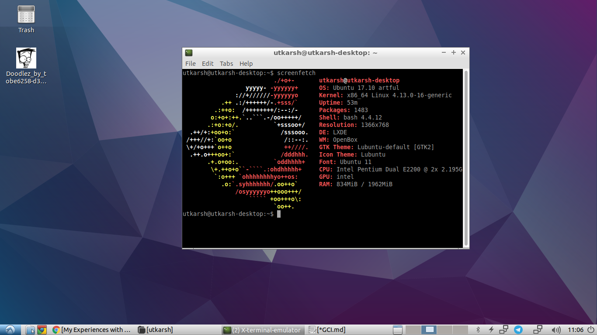
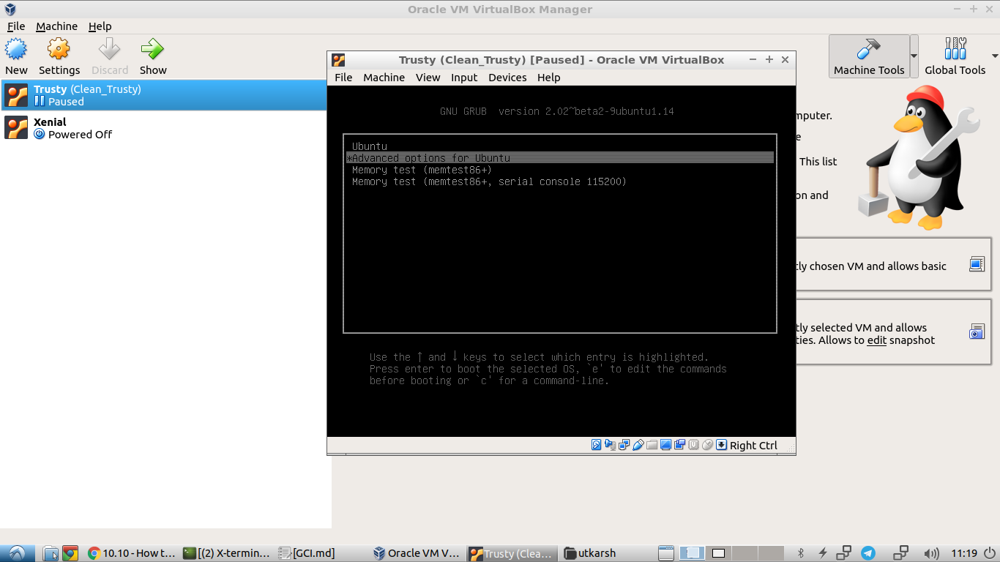
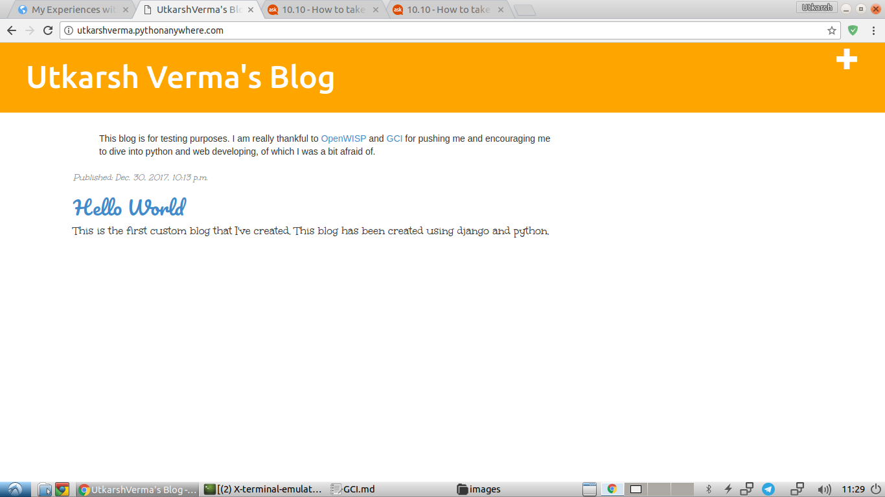
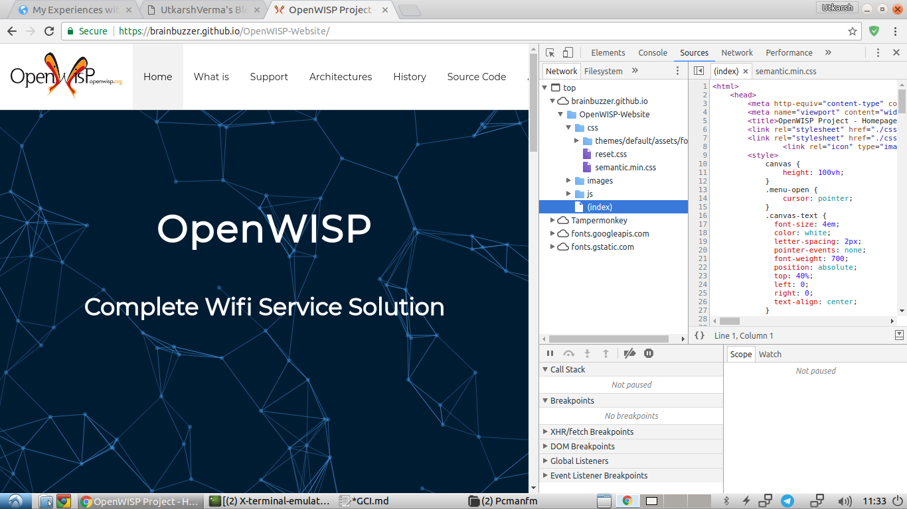
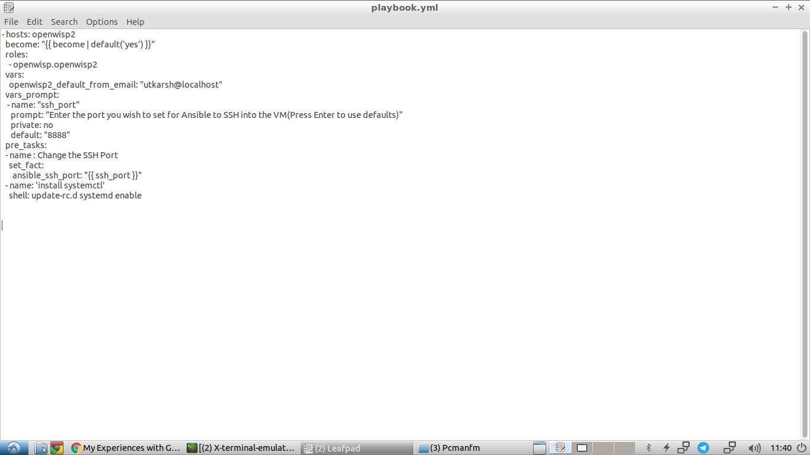
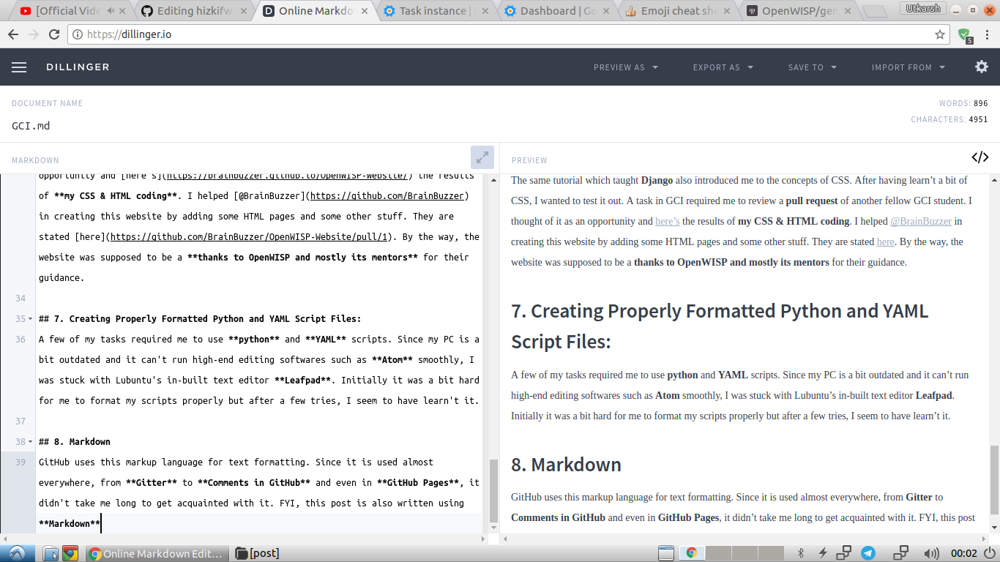

Google Code-in with OpenWISP
 Recently I’ve been participating in Google Code-in which is Google’s initiative to introduce young minds to the concept of FOSS, that is Free or Open-Source Softwares. This post is for sharing my experiences with GCI, as the title suggests. So let’s just get on it.
Recently I’ve been participating in Google Code-in which is Google’s initiative to introduce young minds to the concept of FOSS, that is Free or Open-Source Softwares. This post is for sharing my experiences with GCI, as the title suggests. So let’s just get on it.
It all began while I was returning from an outing on 5 December, 2017 and was searching the internet for Google Science Fair to check if I could participate in it or not. When I searched it and scrolled down, I saw a link for Google Code-in. The very combination of the words Google and Code had raised my adrenaline levels and so I starting reading about it and after a few moments, I had decided to participate in it. Soon I had my father fill up the Parental Consent and I was ready to begin.
Being a total beginner with this contest and with the concepts of FOSS, I had a lot to learn, and I was aware of that. So after a few days of jumping from one organization to the other, I was finally able to settle at OpenWISP. This was thankfully possible due to my chat on their Gitter room with one of their mentors. It also gave me the confidence to proceed ahead with my skill-set and so I began doing the tasks provided by this organisation.
The Things I’ve Learnt:
Being a participant of GCI, I have learned a lot of things.Here are the few of the many things which I’ve learn’t till date, thanks to OpenWISP(I’m still learning more :wink:):
1. Linux Command Line
 Ever since the beginning of GCI, I’ve been using Lubuntu for doing almost everything. Be it installing packages, setting up a virtual machine, creating a webpage, using GitHub or hosting a local server, I’ve got so used to the quick and efficient CLI of Linux now that I’ve developed a sort of disgust for using the mouse. I’ve also acquired great details about popularly used shell commands.
2. git and GitHub

GitHub is the basic need of any developer/maker who intends to share his/her work online. I’m also very fond of the working of GitHub. It allows easy sharing, modifications and contributions to projects through the usage of clones and pull requests . Since OpenWISP is also on GitHub(which open-source organisation isn’t nowadays? :smile:), there have been a lot of tasks involving GitHub. Doing those tasks has increased my knowledge tenfold and I’m now very comfortable with using git.
3. Virtual Machines
 There are some times when a software isn’t compatible with the OS you’ve installed. In that case, it’s a good idea to use virtual machines or VMs rather than installing a whole new OS. I already had a bit of experiences with VMs but I never went deep. While doing some tasks, I’ve learned a few handy things to perform with VMs such as configuring the network settings, passing commands remotely using SSH and using them as disposable local webservers.
4. Python
 I had been thinking about learning Python since it’s getting more and more popular nowadays, but I could never get rid of my hesitation that “Python a whole new language” since I only had exposure to Java. But the tasks that OpenWISP provided in Google Code-in rid me of this hesitation of mine. Once I began reading about it, I found out how similar it is to Java and have therefore started practising it now and hope that I might be able to master it someday. I’ve learnt how to install python modules, how to interpret error messages, and using
I had been thinking about learning Python since it’s getting more and more popular nowadays, but I could never get rid of my hesitation that “Python a whole new language” since I only had exposure to Java. But the tasks that OpenWISP provided in Google Code-in rid me of this hesitation of mine. Once I began reading about it, I found out how similar it is to Java and have therefore started practising it now and hope that I might be able to master it someday. I’ve learnt how to install python modules, how to interpret error messages, and using virtualenv for isolated working area.
5. Web Programming
 Just like Python, I had the same hesitation with web programming as well. But one task in GCI removed this hesitation. That specific task required me to create my own website using Django and guess what, python! As much as I remember it took me two whole days to understand what I had to do and then I created it. If you’re curious about that site of mine, here’s the link to it. I also can’t proceed without referencing to the tutorial OpenWISP referred to me since the authors(DjangoGirls) have done a great job. Here’s the link!
6. CSS & HTML
 The same tutorial which taught Django also introduced me to the concepts of CSS. After having learn’t a bit of CSS, I wanted to test it out. A task in GCI required me to review a pull request of another fellow GCI student. I thought of it as an opportunity and here’s the results of my CSS & HTML coding. I helped @BrainBuzzer in creating this website by adding some HTML pages and some other stuff. They are stated here. By the way, the website was supposed to be a thanks to OpenWISP and mostly its mentors for their guidance.
7. Creating Properly Formatted Python and YAML Script Files
 A few of my tasks required me to use python and YAML scripts. Since my PC is a bit outdated and it can’t run high-end editing softwares such as Atom smoothly, I was stuck with Lubuntu’s in-built text editor Leafpad. Initially it was a bit hard for me to format my scripts properly but after a few tries, I seem to have learnt it.
8. Markdown
 GitHub uses this markup language for text formatting. Since it is used almost everywhere, from Gitter to Comments in GitHub and even in GitHub Pages, it didn’t take me long to get acquainted with it. FYI, this post is also written using Markdown on Dillinger. The picture above shows a code snippet of Markdown.
9. Creating RESTful APIs with Python & Django
 There was also a task in GCI for completion of which, I had to create a RESTful API for my local server. Finishing this task was a bit herculean since the tutorial I referred to was outdated but thanks my previous exposure to Django and Python, I was able to debug the errors and finish this task within the given time-frame. The picture below shows a RESTful API.
There was also a task in GCI for completion of which, I had to create a RESTful API for my local server. Finishing this task was a bit herculean since the tutorial I referred to was outdated but thanks my previous exposure to Django and Python, I was able to debug the errors and finish this task within the given time-frame. The picture below shows a RESTful API.
10. Creating A Website
Thanks to all the things I learnt during GCI, I have now created a blog for myself and the blog I’ve created is the one you’re currently reading :smile:. This website is hosted through GitHub Pages and the posts are written using Markdown. I’ve also used Travis to constantly detect my pushes, build them and push the build to the master branch of the website repository.
The Challenges I Faced:
While doing the Google Code-in tasks, I didn’t face any huge challenges as such. But still challenges are challenges and these are the ones I faced:
1. ansible-openwisp2
In one of my tasks, I had to debug the ansible-openwisp2. The issue seemed to be caused by a python library (spatialite) on specific systems (operating systems). The repo worked on newer operating systems such as Ubuntu 16.04 but failed on the older ones. Since I was very desperate to fix this bug, I had spent hours doing the testing but to no end. Lastly, a very basic fix removed the issue, and that fix was updating ansible to the latest version.
2. Creating a RESTful API using Python and Django
This task was a bit time consuming due to the outdated tutorial I referred to for learning RESTful API creation. As much as I remember, I had to do several modifications of mine to get the API to work, the major ones of them being:
- Downgrading to good ‘ol Django version 1.10.
- Installing the rest-framework-swagger v0.3.10 django module.
- Installing the django-rest-framework v0.1.0 django module.
- Adding
fields='__all__'to the Serializers.
You might think as to why I did the downgrading, which is a correct point. I did so because the skeleton django project which I was using was configured according to the older django and django evolves pretty fast, trust me.
3. Vagrant
Vagrant is a tool which allows the easy creation of VMs and also the installation of huge projects just by running a single file named Vagrantfile. As I’ve stated earlier, I have a really outdated PC. Vagrant requires VTI -x which my PC didn’t have. This fact really set me back big-time. Luckily I was able to do one Vagrant task using my college-returned brother’s laptop, but wasn’t able to do any other Vagrant tasks afterwards since he had returned to his college.
I also tried searching for a way to use Vagrant without this feature but had no success. That’s why I had to leave a few Vagrant tasks. I also wanted to contribute to a repository by creating a Vagrantfile for it, but I was unable to do so since I wasn’t able to run Vagrant.
Aspects I didn’t Like:
There aren’t really any aspects about GCI or OpenWISP that I don’t like. However I do have a few suggestions for OpenWISP:
1. Scarcity of Mentors
I feel that there’s a scarcity of mentors in OpenWISP, and it’s a huge setback. It causes task reviewing delays. This is also very burdening for the mentors who have the responsibility of reviewing the tasks
2. Activity Time Slots of Mentors
This suggestion actually supplements the above one in a way. Since most of the mentors belong to the same continent, therefore they are active only during one part of the day. This causes issues for someone in an incompatible time zone since he/she has to break his/her daily routine to reach the mentors.
3. Not all Mentors appear on Gitter
I’ve noticed that not all mentors appear on Gitter to answer the queries of the participants, which isn’t a good sign. So increasing mentor participations in the discussion platforms(such as Gitter) would be a good start.
Ending Note
Phew, I didn’t think that my write-up would be this huge, looks like I still have a long way to go as a writer. Anyways, I just wanted to say that I’m really, whole-heartedly thankful to Google Code-in as well as OpenWISP for increasing my skill-set significantly. I never would’ve thought that I’d be able to learn python, host my own website and all the stuff which I’ve learnt in these challenging yet fun forty days. I really appreciate the guidance OpenWISP provided since I was a mere beginner at everything when I had planned to enter Google Code-in, but now I’ve leveled up :smile:. I’ve also made some great friends along the way with whom I love discussing programming-related stuff. I really hope that one day I’ll be able to improve my skills to that extent at which I’ll be able to contribute to OpenWISP as a mentor.
That’s all that I have to to say. Actually, no :wink: ! I’d like to share a quote before that:
Everything seems difficult until and unless you give it a try.